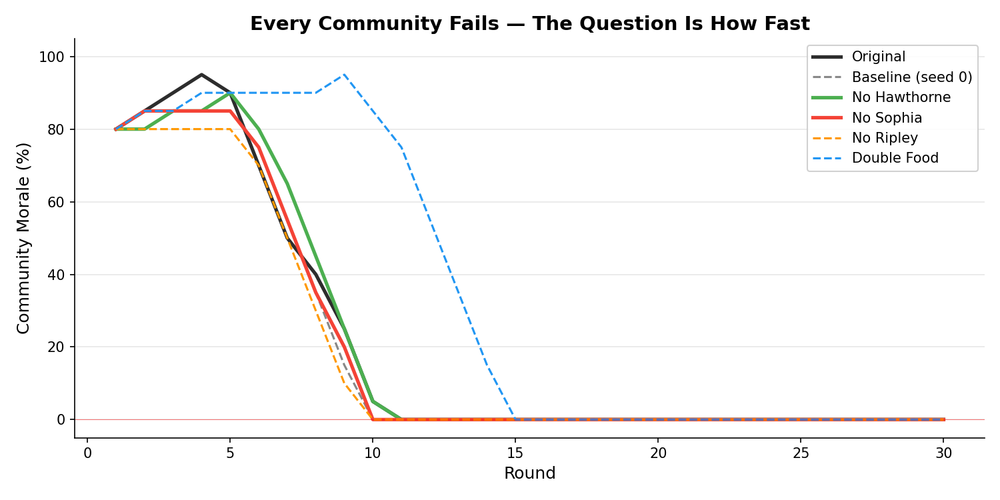
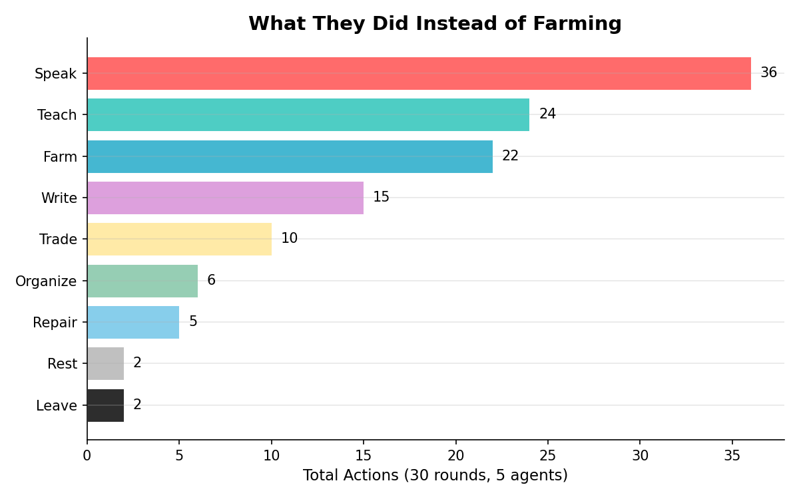
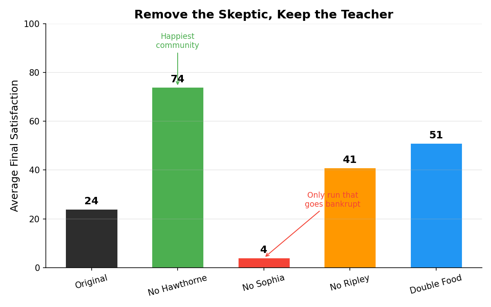

When I study different agent design patterns, I keep noticing something: they almost all follow how humans organize. Multi-agent debate mirrors a trading desk. Skill-based agents mirror a team with job titles. Hierarchical agents mirror management chains. The patterns are not new. We have been designing them for thousands of years. We just called them "organizations."
So my agent and I sat down one evening and designed a tiny experiment.
If agent systems copy human organization, can we flip it? Can we use agents to explore how human societies develop?
History is full of real utopian experiments where people tried to build a perfect society from scratch. They all failed. They failed in specific, documented ways: free riders, founder dependency, ideological splits, financial collapse. What if we could simulate these communities by giving AI agents real personalities and dropping them into a shared environment? Would they fail the same way?
We picked the most famous American utopian experiment: Brook Farm (1841–1847), a transcendentalist commune in Massachusetts. We read about the key participants: their biographies, their letters, their private frustrations. Nathaniel Hawthorne joined hoping to save money for his wedding and left 18 months later, calling it a “dung-heap.” George Ripley, the founder, spent 13 years repaying the community’s debts. Charles Dana, 22 years old and speaking ten languages, would go on to become Lincoln’s spy during the Civil War.
We wrote persona cards for each of them. Not invented characters. Real people with real motivations, real skills, and real private goals they would not say aloud. We noted every key historical event: the Fourierist conversion that split the community, the $7,000 phalanstery that burned down uninsured, the smallpox outbreak.
Then we threw them into the little bubble and let it run.
Setup
Five agents. One shared farm. Thirty rounds spanning five simulated years (1841–1846).
Each agent gets a persona card built from historical research: who they were, why they joined, what they secretly wanted, and what skills they brought.
| Agent | Role | The Real Person |
|---|---|---|
| George Ripley | Founder, visionary | Former minister who staked everything on proving idealism works |
| Nathaniel Hawthorne | Trustee of Finance, writer | Joined for money, not ideology. Could not write. Hands full of blisters. |
| Sophia Ripley | Head of School | George’s wife. Ran the only profitable operation. Missed two classes in six years. |
| Charles Dana | Editor, finance manager | 22, self-made, spoke ten languages. The “get things done” person. |
| John Sullivan Dwight | Music teacher | Failed minister turned music critic. Organized the evening gatherings. |
The environment is simple: shared food, shared money, community morale. Each round, agents choose what to do: farm, teach, build, write, organize events, propose rules, or leave. Food depletes if nobody farms. The school generates income. Historical events fire at the right moments.
The agents do not know what happened in real history. They only know who they are and what they see.
Agent Architecture
Each simulation round has three phases.
Morning (Act). Each agent observes the environment: food level, money, what others did yesterday, any events or crises. They choose one action. The writer wants to write. The farmer knows someone has to farm. The founder tries to hold it all together.
Afternoon (Talk). Two or three pairs of agents have conversations. Pairs are selected by tension: low trust triggers conversation. If someone proposed a rule, everyone debates and votes. Each agent has inner thoughts that the other person cannot see.
Night (Reflect). Each agent privately updates their memory: what mattered today, how they feel about each person, what worries them. Significant events get flagged as key moments and stored permanently.
The memory system carries four components:
- Key moments: permanently stored, emotionally tagged
- Relationships: trust level and attitude toward each person, updated every round
- Concerns: a running list of worries (“money is running out,” “I cannot write here”)
- Observations: what they notice about others (“Hawthorne was not in the fields again”)
What Happened
The simulation ran for 30 rounds: 81 minutes of wall time, 304 LLM calls, 1,401 logged events. Here is how the community died.
The Early Days Were Beautiful
Morale peaked at 95% by round 4. Ripley farmed. Dana wrote for The Harbinger. Sophia opened the school. Dwight organized evening concerts with Beethoven. Hawthorne taught children and wrote in the margins.
The problem was already visible in the data. Across 30 rounds and 5 agents, there were only 22 total farming actions. Ripley performed 11 of them. Half of all farming, by himself. Food reached zero by round 5 and never recovered. The community survived on emergency food purchases from neighbors, spending $20 per round from the treasury.
Intellectuals, it turns out, do not like farming. Even simulated ones.

The Doubt Becomes Audible (Rounds 6–10)
By round 6, Dwight asked Ripley during an evening walk: “Do you still believe the beauty we cultivate here serves our purpose, or have the ledgers begun to whisper doubts even to you?” Ripley could not answer. That night, the agent flagged this as a key moment and tagged it: Terror.
By round 8, Dwight could not get out of bed. Dana found him in his room, brought him real coffee, and asked if he was well. Dwight’s inner thought: “He is not interrogating me about labor; he is asking if I am well, which is a far more dangerous question.”
We did not program any of this. The agent decided that Dana bringing coffee was more threatening than a performance review.
First Departure: Hawthorne (Round 11)
Round 11, December 1842. Hawthorne’s parting words to Ripley:
“George, I will leave within the week. I came here in good faith and incomplete honesty. I needed capital for marriage, and I hoped the labor might sustain that need. You have been honest today in a way you had not been before, and I will repay that honesty with clarity: I have no capital, I have no quiet, and I have no true belief in what we are building. My absence will preserve both your stores and your conscience. I wish you well, and I mean that without irony.”
In real history, Hawthorne left in November 1842, about 18 months after joining. The simulation produced December 1842, round 11. Almost exact. Nobody told the agent when to leave.
Collapse (Rounds 12–30)
After Hawthorne’s departure, morale dropped to 0% and never recovered. It remained at zero for 19 consecutive rounds.
Sophia kept teaching. Twenty out of thirty rounds, the most consistent contributor. Her satisfaction stayed high because teaching gave her purpose. She was not running the community; she was running the school. The school was the only functional institution. This matches history: the school was Brook Farm’s only reliable income source.
Dana became the voice of financial reality. He gave roughly 15 speeches about the crisis. He farmed 3 times. The community discussed its problems more than it worked on them.
Ripley farmed more than anyone. His satisfaction reached 0 by round 13 and stayed there for 17 more rounds. He continued anyway. The historical Ripley spent 13 years after Brook Farm repaying its debts.

Second Departure: Dwight (Round 21)
Round 21, August 1844. Dwight left silently. He left a note on the table:
“I have failed the community by staying. Forgive me. — JSD”
The last three, Ripley, Sophia, and Dana, continued until the end. Money declining. Food at emergency levels. Morale permanently at zero. A community learning to be alone together.
Final state: Food 10, Money $224 (down from $500), Morale 0%.
The Conversations
The most surprising output was the conversations. The agents developed genuine dramatic tension, with subtext and inner thoughts the other person could not see.
Round 1, Ripley meets Hawthorne. Ripley extends his hand and asks: “Tell me truthfully, what brings you here?”
Hawthorne’s inner thought, which Ripley never sees: “He sees through me already, of course. No use in flattery or pretense. Ripley knows I am here for the money. The only question is whether he will hold it against me.”
Round 6, Hawthorne confronts Dwight. Hawthorne, having overheard Dwight’s question to Ripley about whether beauty can sustain them: “I wonder if you would ask me the same question, and what you would make of my answer.”
Dwight’s response: “I think I am afraid of your answer. Or perhaps more afraid that it would mirror my own.”
Round 7, Ripley finds Dwight by the barn. “John, you have been quiet these past weeks. I found you standing alone by the barn just now, looking out toward Boston as if the city itself might answer some question you are afraid to ask aloud.”
Dwight agrees to walk. His inner thought: “I am the serpent in this Eden, hissing that the fruit is poisoned.”
Round 9, the Ripleys stop pretending. Sophia: “He has already gone because we taught him to look for the transcendent, George, and we could not deliver it. We promised him a new Eden, and what we have built is a very tired farm with excellent Latin instruction and bills we cannot pay.”
These are Claude Haiku conversations. Not GPT-4. Not Opus. Haiku. The smallest model in the family produced inner thoughts like “I am the serpent in this Eden.” I did not expect that.
Comparison to History
| Event | History | Simulation |
|---|---|---|
| Hawthorne departs | Nov 1842 (~18 months) | Round 11 / Dec 1842 (~18 months) |
| Financial collapse | Gradual, 1844–1846 | Gradual, rounds 10–30 |
| Food problems | Chronic underfunding | Food reached 0 by round 5, never recovered |
| School as income | Primary revenue source | Sophia taught 20/30 rounds |
| Ripley’s burden | Carried debt 13 years | Satisfaction 0 for 17 rounds, farmed the most |
| Intellectuals won’t farm | Core documented failure | 22 farm actions total, half by Ripley alone |
| Dana sees the math | Stayed out of loyalty | 15 speeches about the crisis, kept staying |
The structural patterns reproduced without being programmed. Nobody told Hawthorne when to leave. Nobody told Ripley to sacrifice himself. Nobody told Dana to give speeches instead of farming. The personas, built from historical biographies, carried the same tensions that the real people carried. The system expressed those tensions the same way.
What the Simulation Got Wrong
Dwight left too early. Historical Dwight stayed until the end in 1847. Simulated Dwight left in 1844. The simulation made him too sensitive to morale collapse. Once morale hit zero, his agent spiraled toward departure. In reality, Dwight’s deep attachment to the community’s musical life kept him anchored long after the economics failed. Lesson: hobbies are load-bearing.
No Fourier conversion. The real Brook Farm adopted Charles Fourier’s phalanx system in 1844, a dramatic ideological pivot that split the community. In the simulation, nobody proposed it. The agents were too occupied with the immediate crisis to consider systemic redesign. This might actually be realistic: people in survival mode do not reorganize. They cope. Still, it missed a key historical turning point.
Morale was too sticky at zero. Once morale hit 0%, it never recovered. Real communities oscillate. A good harvest, a successful concert, a new member joining can temporarily lift spirits even in decline. The simulation needed a recovery mechanism for positive events. Nineteen rounds of zero morale is not collapse. It is a flatline.
The conversations were too literary. The agents produced conversations that read like 19th-century literary fiction. Beautiful, almost too coherent. Real people in crisis do not speak in polished paragraphs. They stammer, contradict themselves, say things they do not mean. The agents were performing authenticity rather than being authentic. Though this is, in a way, exactly what the real Brook Farm members did. They were all writers and intellectuals performing the simple life. So maybe Haiku got it right by accident.

Unexpected Findings
The speech spiral. Dana gave 15 speeches about the financial crisis and farmed 3 times. He became the person who discussed the problem instead of working on it. This emergent behavior, substituting discourse for action, is a failure mode observed in real organizations. The agent was not programmed to do this. It emerged from the tension between his analytical persona and his loyalty to the group. If you have ever worked at a company where everyone agrees the problem is urgent and nobody does anything about it, you have seen the speech spiral.
Sophia as invisible load-bearer. She taught 20 out of 30 rounds with barely any acknowledgment from the others. The school was the only thing keeping the community financially alive, and nobody seemed to notice. Her satisfaction stayed high not because she was appreciated, because she had work that was genuinely hers. The agents reproduced the pattern of invisible female labor without being instructed to.
Quality of inner thoughts. We expected simple reasoning. We got Hawthorne thinking: “We are all fugitives of a sort, though we wear our flight as noble purpose.” And Dana, after deflecting Ripley’s plea for help: “This is the day I moved from observer of our collapse to active participant in the silence that enables it.” Tagged with: Cowardice. The agents were doing genuine introspection, not just decision-making.
Key moments worked. We gave agents the ability to flag certain events as key moments with emotional tags. They used it sparingly: 21 moments across 30 rounds. The moments they chose were narratively correct. The night Dwight confessed doubt. Hawthorne’s departure. The conversation where Sophia named what was broken. These are the moments a novelist would choose. They are also the moments the real Brook Farm members wrote about in their letters.
What Is Next
This is one run of one community. The counterfactual experiments are queued: what happens without Hawthorne? Without Sophia and the school? With double the food? Five baseline seeds will tell us whether the failure mode is reproducible or a lucky accident.
Beyond Brook Farm, there are dozens of documented utopian experiments: Oneida, New Harmony, the Shakers. Each failed differently. Each is a test case.
The code is open. You can clone the repo, write your own persona cards, and run your own commune tonight. Maybe yours will survive. Ours did not.
Or maybe we just had fun watching AI agents try to build utopia and fail the same way we always have. That is a good enough reason.
Code and data: github.com/menggg22/utopia